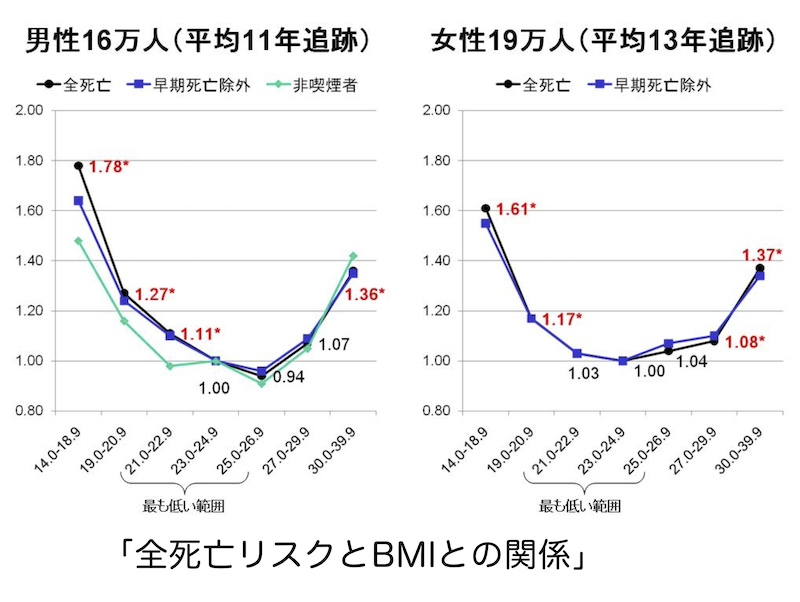
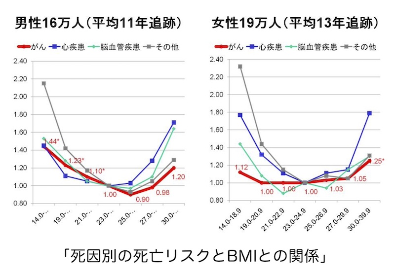

公開日：2026年6月｜最終更新：2026年6月
日本人のBMI（Body Mass Index）と死亡リスクの関係について、 7つのコホート研究を統合し、35万人以上のデータを用いて プール解析（複数研究の元データを集めて再解析する統計手法）が行われています。


BMI23〜25を基準（ハザード比＝1）として、 各BMIカテゴリーの相対死亡リスクが示されています。 なお、年齢、地域、喫煙、飲酒、高血圧、糖尿病、 余暇のスポーツ活動などの要因について統計的補正が行われています。
死因別では、
総合すると、最も死亡リスクが低い範囲は BMI21〜27であった。
死因別では
最も死亡リスクが低い範囲は BMI21〜27であり、男女で共通していた。
別の研究では、「少し太め」の方が長生きするという研究結果も複数報告されています。BMIが、女性で、23.5前後、男性で、26前後、と言われいます。
特に高齢者では、痩せている人は、骨粗鬆症になりやすい、転倒して骨折しやすい、免疫力が低いなどの健康リスクがあると言われています。適度の脂肪は、免疫力、体力エネルギーの源など、身体にとて良い働きをするとも考えられています。
欧米の研究では、肥満による死亡リスク上昇がより顕著に示されることが多いですが、 この資料の研究の結果は、南アジア・東アジアの研究結果と一致していました。
このことから、日本人では
にも注意が必要であることが示唆されます。
逆J型の曲線は、「痩せすぎ」が大きな健康リスクとなる可能性を示している。